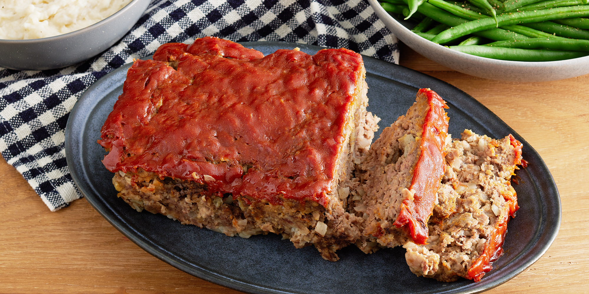

Easy Meatloaf

Steps to make Easy Meatloaf
Step 1
Preheat oven to 350 degrees F (175 degrees C).
Step 2
In a large bowl, combine the beef, egg, onion, milk and bread OR cracker crumbs. Season with salt and pepper to taste and place in a lightly greased 9x5-inch loaf pan, or form into a loaf and place in a lightly greased 9x13-inch baking dish.
Step 3
In a separate small bowl, combine the brown sugar, mustard and ketchup. Mix well and pour over the meatloaf.
Step 4
Bake at 350 degrees F (175 degrees C) for 1 hour.